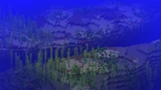
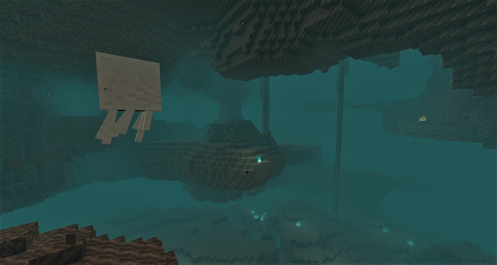
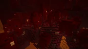
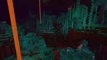
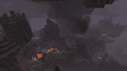

Los biomas son regiones en el mundo de Minecraft que se diferencian por características geográficas, flora, temperatura, altitud, nivel de humedad, color del cielo y color del follaje. Los biomas determinan distintos ecosistemas dentro de un mundo, como bosques, junglas, desiertos o llanura, entre otros más.
El bioma de un lugar se determina durante la generación del mundo en lugar del entorno actual. Incluso si el jugador cambia por completo todos los bloques en un área grande para imitar el terreno de otros biomas, los biomas en esta área no se verán afectados. Sin embargo, en Java Edition, el comando puede cambiar el bioma de un área. /fillbiome Los biomas se pueden localizar usando el comando. /locate biome
En Java Edition, actualmente, hay 53 biomas de la superficie, 5 biomas del Nether, 5 biomas del End así como un bioma que se usa solo para un ajuste preestablecido superplano, con un total de 64 biomas diferentes. En Bedrock Edition, sin embargo, hay 53 biomas de la superficie, 5 biomas del Nether, 1 bioma del End y 27 sin usar, con un total de 86. Los biomas pueden distinguirse por el color de la hierba y de las hojas (el color del agua también difiere entre los biomas del bioma), junto con los tipos de bloques presentes (por ejemplo, tipos de árboles u otras plantas como cactus, cobertura de arena en los desiertos). Los biomas se generan pseudo-aleatoriamente usando la semilla del mapa.
En estos biomas, siempre nieva en lugar de llover, sin importar la altura; todas las fuentes de agua expuestas al cielo están congeladas
| Nombre del bioma e ID | Características | Descripción | Imagen |
|---|---|---|---|
| Llanura nevada (Llanura nevada) 12 | Temperatura: 0.0 Nevadas, Robles[Solo Java Edition], Hielo, Abetos, Iglús, Esqueletos glaciales, Conejos blancos (y algunos negros y blancos), osos polares, Hierba alta ocasional, Aldeas, Puestos de saqueadores | Un bioma expansivo y plano con grandes cantidades de capas de nieve. Se generan cañas de azúcar en este bioma, pero pueden despegarse del suelo cuando se cargan los chunks y las fuentes de agua se convierten en hielo. Se generan robles[Solo Java Edition] y abetos en este bioma. En cuanto a animales, solo se generan conejos y osos polares. Sin embargo, es uno de los pocos biomas donde aparecen esqueletos glaciales. En la versión Bedrock, solo se generan esqueletos y esqueletos glaciales, pero con generadores se pueden generar monstruos. Gracias al tamaño del bioma y la escasez de madera y animales, al principio la supervivencia puede ser difícil en comparación con otros biomas. Este es uno de los dos biomas donde se generan iglús de forma natural. También se pueden generar aldeas y puestos de saqueadores. | 
|
| Picos de hielo (Picos de hierro) 140 | Temperatura: 0.0 Hielo compacto, Hielo, Capa de nieve, Nevadas, Bloques de nieve, Esqueletos glaciales, Conejos blancos (y algunos blancos y negros), Osos polares, picos de hielo | Una variación poco común de la llanura nevada que se caracteriza por sus grandes picos y glaciares de hielo compacto. Normalmente, los picos alcanzan los 10 o 20 bloques de altura, pero algunos picos más altos y delgados alcanzan los 50 bloques de altura. Los glaciares reemplazan los lagos. Casi todos los bloques de césped se reemplazan con bloques de nieve pero se pueden encontrar ocasionalmente bloques de césped en agujeros y bajo salientes. La hierba alta es poco común. Como ocurre con la llanura nevada, no se generan otros animales más que Conejos y osos polares y de noche aparecen esqueletos glaciales. |  |
| Taiga nevada (Snowy Taiga) 30 | Temperatura: -0.5 Capa de nieve, Nevadas, Hielo, Árboles de abetos, Flores, Lobos, conejos blancos (y algunos blancos y negros), Zorros, Iglús, Aldeas[Solo Bedrock Edition], Puestos de saqueadores, arbustos de bayas dulces | Como ocurre con la taiga, este bioma tiene grandes expansiones de abedules, helechos y sus variantes más altas se generan normalmente, pero también se puede encontrar hierba alta. Es uno de los pocos lugares donde los lobos y los zorros se generan de forma natural. También se puede encontrar un iglú entre los árboles en terrenos más o menos planos. También se pueden generar aldeas[Solo BE] y puestos de saqueadores[Solo BE]. Las aldeas usan la misma arquitectura que la de las taigas pero los aldeanos tienen una vestimenta de biomas helados. |  |
| Montañas de taiga nevada (Snowy Taiga Mountains) 158 | Temperatura: -0.5 Abetos, Capa de nieve, Nevadas, Helechos, Lobos, Arbustos de bayas dulces, Zorros, Conejos blancos (y algunos blancos y negros) | Este bioma está lejos de ser tan plano como su contraparte más común. A comparación de las montañas de taiga, las montañas de este bioma son más empinadas y más erráticas. Gracias a estas diferencias de altura, navegar este bioma es bastante peligroso. También a comparación de su variante, los iglús, las aldeas y los puestos no se generan aquí. |  |
| Río helado (Río helado) 11 | Temperatura: 0.0 Hielo, Agua, Arena, Arcilla, Hierba marina, Conejo, Oso polar, Salmón, Ahogado, Esqueleto glacial | Un río con una capa de hielo que cubre su superficie. Se genera solo si un río entra o se encuentra con una taiga nevada. Se genera salmón bajo el agua y los conejos y los osos polares se generan en el hielo. De noche, se pueden generar ahogados bajo el hielo y esqueletos glaciales en la superficie. No se generan otros monstruos, ni en las profundidades, salvo con un generador. |  |
| Playa nevada (Playa nevada) 26 | Temperatura: 0.05 Arena, Capa de nieve, Nevadas, Hielo, Tesoro enterrado, Naufragio, conejo | Como en una playa normal, se puede encontrar mucha arena en este bioma y se pueden encontrar tesoros enterrados. Sin embargo, la arena está cubierta por una capa de nieve. Las playas nevadas se encuentran a menudo cuando un bioma nevado. No hay multitudes pasivas que no sean conejos engendran en este bioma. |  |
En estos biomas, siempre nieva en lugar de llover, sin importar la altura; todas las fuentes de agua expuestas al cielo están congeladas
| Nombre del bioma e ID | Características | Descripción | Imagen |
|---|---|---|---|
| Montañas (Mountains) 3 | Temperatura: 0.2 Robles[Solo JE], árboles de abeto[Solo JE], Grava, flores, mena de esmeralda, Piedra infestada, llamas | Un bioma de altura donde algunas cumbres alcanzan la capa y=130, con algunos robles y abedules esparcidos. Aparecen acantilados, cimas, valles, cascadas, salientes, islas flotantes, cavernas y otras estructuras, lo que ofrece vistas increíbles. Este es uno de los pocos biomas donde se generan llamas de forma natural. También nieva en ciertas alturas, lo que crea capas de nieve en la cima de las montañas. Hay un riesgo significativo de caerse, ya que hay varias cornisas empinadas lo suficientemente altas como para causar daño por caída severo o hasta la muerte. Las montañas son uno de los pocos biomas donde se pueden encontrar menas de esmeralda y lepismas de forma natural. |  |
| Colinas pedregosas ventiscosas 131 | Temperatura: 0.2 Abetos[Solo JE], Robles[Solo JE], Grava, Llama, Mena de esmeralda, Piedra infestada, Capa de nieve | Las montañas en este bioma son levemente más altas que en su contraparte regular[Solo JE], muchas de las cuales alcanzan las nubes y están cubiertas por cumbres nevadas. El terreno está compuesto principalmente por grava, con pequeños parches de pasto por aquí y por allá. Debido a la poca cantidad de pasto, la población de árboles de abeto y roble en este bioma es escasa. Al generarse junto a un bioma oceánico, puede generar playas normales o frías. |  |
| Bosque ventiscoso 34 | Temperatura: 0.2 Piedra, Tierra, Llama, Mena de esmeralda, Piedra infestada, Árboles de abeto, Árboles de roble | En este bioma, usualmente encontrado en el medio del bioma montaña "Regular mountains", se genera más montañas altas, mucha de ellas están cubiertas por capas de nieve. Las pendientes son muy empinadas, por lo tanto hacer escalada en esas montañas es difícil y peligroso. Los picos llevan mucho más hierba y abetos que las Montañas de Grava, usualmente formando un pequeño bosque en la cima. |  |
| Montañas pedregosas+ 162 | Temperatura: 0.2 árboles de abeto, Àrboles de roble, Grava, Llama, Mena de esmeralda, Piedra infestada, Hierba | Esta variante del bioma Montañas Boscosas remueve su marca de abetos cubierta por picos a favor de un terreno cubierto principalmente por grava y piedra, similar al bioma Montañas de Grava. Mayores, profundos valles están tallados en un relativamente paisaje árido - solo un poco de árboles aislados pueden ser encontrados aqui. Como el bioma Montañas de Grava, cuando se genera al lado de un bioma de Océano, una playa se genera. |  |
| Taiga 5 | Temperatura: 0.25 árboles de abeto, Flores, Helecho,, Lobos, Conejosmarrones, salt & pepper y negros, Aldeas, Puesto de saqueadores, Zorros, Arbusto de bayas dulces, | Un predominante bioma plano cubierto por un bosque de abetos. Helechos, grandes helechos y arbustos de bayas creciendo comúnmente en el suelo del bosque. Te encontrarás grupos de lobos aquí, al igual que también pequeños grupos de zorros o conejos. Las aldeas se pueden generar en este bioma; las casas en estas aldeas están hechas de madera de abeto. Los puestos de saqueadores también se puede generar aquí. |  |
| Montañas de taiga 133 | Temperatura: 0.25 árboles de abeto, Flores, Helechos, Oveja, Conejosmarrones, sal pimienta y negros Arbusto de bayas dulces, Zorros | El bioma Montañas de Taiga se caracteriza de grandes bosques de abetos, pero esos bosques están superpuestos en terreno montañoso, a diferencia de Colinas de Taiga, esas montañas tienden ser grandes y más difíciles de escalar. Tal vez debido a la dura naturaleza en este bioma, ninguna aldea ni tampoco puestos pueden ser encontrados aqui. |  |
| Taiga con árboles gigantes 32 | Temperatura: 0.3 árboles de abeto, Podzol, Helechos, Lobos[Solo JE], Conejosmarrones, salt & pepper y negros[Solo JE], Zorros, Roca musgosa, Hongos, Tierra, Tierra estéril, Arbusto muerto | Taiga con árboles gigantes es un bioma frío raro compuesto de árboles de abeto, muy igual al bioma normal de Taiga. Aun así, algunos árboles son 2x2 de anchura y son muy altos, similar a los árboles altos de la jungla. Adoquínes musgosos aparecen frecuentemente, setas marrones son comúnes, y el podsol también puede ser encontrado en el suelo del bosque. También hay patrones de tierra esteril en las que no crece el césped, con algunos arbustos muertos. Los lobos y zorros también pueden aparecer aqui, como también lo hacen en el bioma normal de Taiga. Los conejos pueden aparecer aqui en la Java Edition. |  |
| Taiga con abetos gigantes 160 | Temperatura: 0.25 árboles de abeto, Podzol, Helechos, hierba, zorros, Lobo[Solo JE], Roca musgosa, Champiñones, Tierra | El terreno en este bioma es casi exactamente igual a su contraparte normal. De igual manera, lo más sorprendente de este bioma son sus abetos gigantes, los cuales son una versión más amplia de los abetos normales. Uno puede fácilmente diferenciar esto de un árbol gigante de Taiga observando por como las hojas casi cubren completamente el tronco, mientras que, en un Taiga de árboles gigantes normal, las hojas tienden a cubrir solo la punta. |  |
| Costa Rocosa 25 | Temperatura: 0.2 Piedra, Grava, Agua, Tesoro enterrado | Fiel a su nombre, este bioma cubierto de roca a menudo aparece donde los biomas de montaña se encuentran con el océano. Dependiendo de la altura de la tierra cercana, La Costa Rocosa puede generar tanto como pendientes medias como grandes acantilados, alcanza suficiente altura como para ser cubierta de capas de nieve. Aquí no se generan criaturas pasivas. Se pueden generan tesoros enterrados. |  |
En estos biomas verdes, Comienza a nevar sobre el límite de altura de 256 bloques, por lo que la capa de nieve no se genera naturalmente. dicho de otra manera, llueve. El follaje y el césped es de un vibrante verde claro, A excepción de los pantanos y bosques oscuros, que tienen un césped verde oscuro. Los ríos y los Bosques de abedul también están exentos de éste, ya que tienen un tono acuático apagado. El agua es azul en este bioma.
| Nombre del bioma e ID | Características | Descripción | Imagen |
|---|---|---|---|
| Llanura 1 | Temperatura: 0.8 hierba alta, Césped, Flores, Aldeas, Caballos, Burros, Puesto de saqueadores, Robles, Nido de abejas | Un bioma plano y herboso con pendientes suaves y unos pocos robles. Lagos, pequeñas cuevas submarinas y aldeas son comunes. Las ntradas a cuevas, los lagos de lava y las cataratas son fáciles de identificar por el terreno plano sin obstaculos. Los mobs de granja se encuentran facilmente en las llanura; este bioma y sus variantes también son los unicos biomas donde los caballos spawnean naturalmente. Los puestos de saqueadores tambien pueden ser generados. |  |
| Planicie de girasoles 129 | Temperatura: 0.8 Hierba, Girasoles, Flores, Burros, Aldeas[Solo BE], Puesto de saqueadores[Solo BE], Caballos, Arboles de roble, Nido de abejas | Encontrado dentro de Planicies Normales, este bioma es el único lugar donde los girasoles se generan naturalmente, de ahí el nombre. Crecen en abundancia, haciendo del tinte amarillo un recurso ampliamnete disponible. |  |
| Bosque 4 | Temperatura: 0.7 Robles y abedules, Flores, Lobo[Solo JE], Nidos de abeja[Solo JE] champiñones | Un bioma pequeño y muy común, con muchos árboles de roble y abedules, colinas ocasionales y una buena cantidad de hierbas altas, hongos y flores. Este es uno de los biomas más preferidos para comenzar debido a la abundancia de madera. Como en las taigas, se pueden encontrar lobos. |  |
| Bosque floral 132 | Temperatura: 0.7 Flores, Árboles, Conejosmarrones, salt & pepper y negros, Nidos de abeja | Esta variante de bosque tiene menos arboles pero esta llena de flores con casi todos los tipos de flores y hierbas del juego, algunas de las cuales solo crecen aquí. Después de todo, este bioma es optimo para recolectar flores. Los lobos no spawnean en el bosque floreado pero los conejos aparecen ocasionalmente. |  |
| Abedular 27 | Temperatura: 0.6 Arboles de abedul, Flores, Nidos de abeja[Solo JE] | Un bosque donde el césped es aqua y solo se genera árboles de abedul. Al contrario del bosque normal, aquí no aparecen lobos |  |
| Bosque de abedul alto 155 | Temperatura: 0.7 Arboles de abedul altos, Flores Nidos de abeja[Solo JE] | Los árboles de abedul crecen mucho mas alto que lo usual en esta extraña variante del bosque de abedul. Los árboles normales crecen hasta 7 bloques de altura pero estos son de 11 usualmente. Esto hace que la desforestacion sea una tarea mucho más dificil, además de que le provee al jugador muchos mas recursos. Adicionalmente, el terreno de este bioma es mucho mas erratico que los bosques normales. |  |
| Bosque oscuro 29 | Temperatura: 0.7 Àrboles de roble oscuro, Hongos gigantes, Hongos, Rosas, Mansión del bosque | Este bioma está compuesto por árboles de roble oscuso mayormente un techo de hojas y ocasionalmente champiñones grandes. Los árboles de este bosque están tan juntos que se pueden generar mobs hostiles durante el dia por la poca iluminacion del bosque. En raras ocasiones una Mansión del bosque aparece. Despues de todo el Bosque oscuro es el unico bioma donde se pueden encontrar estas mansiones |  |
| Colinas de bosque oscuro 157 | Temperatura: 0.7 Árboles de roble oscuro, Grandes hongos, Mansión del bosque | Una variante del bosque oscuro donde las colinas dominan el área. Mientras mas luz hay en el bosque menos mobs aparecen, Las montañas en este bioma todavia lo hacen un lugar peligroso para caminar. | 
|
| Pantano 6 | Temperatura: 0.8 Cabaña de brujas, Árboles de roble, Hierba, Enredaderas, Nenúfar, Arcilla, Hongos, Slimes, Hongos grandes[Solo Bedrock Edition], Fosiles, Hierba marina | Un bioma caracterizado por una mezcla de areas planas sobre el nivel del mar y pequeñas piscinas de agua verdosa con nenúfares. La arcilla, arean y tierra se encuentran fasilmente en estos pozos de agua. Los árboles estan cubiertos con enredaderas y pueden ser encontradas creciendo bajo el agua. Los hongos y cañas de azucar son abundantes. Las cabañas de bruja con gatos negros y brujas aparecen exclusivamente en pantanos. Slimes tambien aparecen naturalmente por las noches comunmente en luna llena. Algunos zombies se pueden ahogar bajo el agua y transformarse en ahogados, lo que hace de este un bioma muy peligroso por las noches. La temperatura varia entre el bioma causando que el follaje u los colores del cesped varien. en Bedrock Edition, grandes hongos aparecen. La visibilidad tambien es menor cuando el jugador està bajo el agua. |  |
| Colinas pantanosas 134 | Temperatura: 0.8 Robles, Enredaderas, Nenúfares, Hongos enormes[Solo BE], Agua, Cabañas de pantano[Solo BE], Fósiles | Este raro bioma tiene zonas en las que se elevan pequeñas colinas en pendientes de distinto grado, rodeadas de marismas más planas. Las playas se generan cuando este bioma limita con un bioma oceánico. en Java Edition, las cabañas del pantano no se generan en este bioma, a diferencia del pantano normal. |  |
| Jungla 21 | Temperatura: 0.95 Árboles de jungla, Robles, pirámides de jungla, Helechos, Sandías, Flores, Enredadera, Semillas de cacao, Ocelotes, Loros, Bambú Pandas[Solo BE] | Un bioma templado denso y poco común. Se caracteriza por los helechos y los grandes árboles selváticos que pueden alcanzar hasta 31 manzanas de altura con troncos de 2×2 de grosor. Los robles también son comunes. El paisaje es de un verde exuberante y bastante accidentado, con muchos lagos pequeños a menudo enclavados en valles profundos, a veces por encima del nivel del mar. Las hojas cubren gran parte del suelo de la selva: los "árboles de arbustos" tienen bloques de madera de selva como troncos, rodeados de hojas de roble o de selva. En el interior de una selva, el cielo se vuelve notablemente más claro que en los biomas secos. Las lianas se encuentran junto a la mayoría de los bloques y pueden cubrir la superficie de las cuevas. Los ocelotes, las pirámides, los melones, el cacao, los pandas y los loros se generan exclusivamente en este bioma. Los melones se generan en parches, similares a las calabazas, pero son comunes. |  |
| Jungla modificada 149 | Temperatura: 0.95 Árboles de jungla, Robles, Helechos, Sandias, Flores, Enredaderas, Semillas de cacao, Ocelotes, Loros, Bambú Pandas[Solo BE] | Versión mucho más montañosa de la Jungla normal, con un follaje tan espeso que el suelo apenas es visible. Este bioma es exigente con los recursos de supervivencia del jugador. Se puede confundir con las Colinas de la Jungla, pero las colinas del bioma de la Jungla Modificada tienden a ser más agudas y erráticas. Debido a la altura combinada del terreno y de los altos árboles de la selva, los árboles en esta selva frecuentemente llegan por encima de las nubes. El follaje extremadamente denso y el terreno traicionero hacen que este bioma sea difícil y peligroso de recorrer, especialmente de noche. |  |
| Jungle Edge 23 | Temperatura: 0.95 Árboles de jungla, Robles, Helechos, Sandías, Flores, Enredadera, Cocoa Pods, Ocelotes, Loros, Bambú Pandas[Solo BE] | Este bioma representa una suave transición entre las selvas y otros biomas. En marcado contraste con la vegetación salvaje y desmesurada de los biomas selváticos, el borde de la selva consiste en unos pocos árboles selváticos pequeños y aislados, con parches de melones aquí y allá. El terreno es relativamente llano, con algunas pequeñas elevaciones. Todos los mobs que aparecen en la jungla, incluyendo loros, ocelotes y pandas[Solo Bedrock Edition], también aparecen en el Borde de la Selva. |  |
| Borde de jungla modificada 151 | Temperatura: 0.95 Árboles de la jungla, Robles, Helechos, Sandías, Flores, Enredaderas, Semillas de cacao, Ocelotes, Loros, Bambús Pandas[Solo BE] | El terreno de este bioma es una versión ligeramente más montañosa y accidentada del Borde de la Jungla normal, aunque algunas secciones grandes y planas del mismo son a menudo difíciles de distinguir de su variante estándar. El Borde de la Selva Modificado es el bioma más raro del juego y suele generarse sólo cuando los biomas de la Selva Modificada se encuentran con los biomas de las Colinas del Pantano. El resultado es una zona de transición de dos capas que incluye un Borde de Selva Modificado a lo largo del lado de la Selva Modificada, y un fino borde de Borde de Selva normal en el lado de las Colinas del Pantano. Dado que tanto la selva modificada como las colinas del pantano son biomas raros, además del hecho de que las selvas modificadas tienen menos probabilidades de aparecer en los bordes exteriores de los grupos de biomas de la selva, el bioma del borde de la selva modificada es extremadamente raro. Las estrictas condiciones que se necesitan para su generación también hacen que sea un bioma pequeño cuando se produce, por lo general no más de 150 bloques en su lado largo y menos de eso para el ancho. |  |
| Bamboo Jungle 168 | Temperatura: 0.95 Árboles de jungla, Robles, Podzols, Enredaderas, Ocelotes, Templos de jungla[Solo Java Edition], Sandías, Loros, Bambús, Pandas | El terreno en este bioma está cubierto de hierba con algunos parches de podzol. A diferencia de la jungla normal, los arbustos siguen generando pero no cubren el suelo. Además, solo los árboles grandes de la jungla pueden generar aquí junto con los robles grandes o globosos. La densidad de árboles en este bioma es mucho menor en comparación con el borde de la jungla, pero se generan enormes cantidades de brotes de bambú que cubren este bioma. Mobs exclusivos de la jungla, como ocelotes y loros, pueden aparecer aquí. Panda engendra exclusivamente en este bioma[Solo Java Edition] or have a much higher spawn rate than in regular jungle.[Solo Bedrock Edition] Jungle pyramids can also generate.[Solo Java Edition] |  |
| Río 7 | Temperatura: 0.5 Agua, Arena, Arcilla, caña de azúcar, Hierba marina, Salmón, Calamar, Ahogado | Un bioma que consiste en bloques de agua que consisten en una forma alargada y curva, similares a un río real. Sin embargo, a diferencia de los ríos reales, estos no producen corriente. Los ríos atraviesan o separan los biomas principales. Intentan unirse a los biomas de océano, pero a veces dan vueltas en la misma área de océano En raras ocasiones pueden no tener conexión al océano, en vez de formar un bucle. La hierba tiene un tono aguamarina opaco muy parecido al del océano, y a veces tienden a generarse pequeñas cantidades de roble. Los ríos suelen ser una buena fuente de arcilla. Estos biomas son buenos para pescar, pero los ahogados pueden aparecer de noche. Aparte del salmón, el calamar y el ahogado, los mobs no pueden spawnear en este bioma, incluso bajo tierra, a menos que hayan sido generados por un generador. |  |
| Playa 16 | Temperatura: 0.8 Arena, Grava, Agua, Caña de azúcar, Tortugas, Tesoros enterrados, Naufragios | Generadas cuando el óceano conecta con otros biomas, las playas están compuestas principalmente por arena. Las playas penetran en el paisaje, quitando los bloques originales reemplazándolos por arena. También son útiles para pescar. Los mobs pasivos, aparte de las tortugas, no spawnean en las playas. |  |
| Pradera de champiñones 14 | Temperatura: 0.9 Champiñones, Champiñones gigantes, Micelio, Mooshrooms, Sin criaturas hostiles | Este raro bioma consiste en una combinación de terreno plano y semi-montañoso y su superficie está cubierta por micelio en lugar de pasto. Las praderas de champiñones se encuentran frecuentemente rodeadas por océano, aisladas de otros biomas. Suelen ser de unos pocos cientos de bloques de longitud. Es uno de los únicos biomas en los que champiñones gigantes pueden generarse naturalmente y los pequeños pueden crecer a plena luz del día. Ninguna otra criatura, además de las mooshrooms y los murciélagos[Solo Java Edition] se generan naturalmente en este bioma, incluyendo a los monstruos que suelen aparecer en la noche. Esto aplica por igual a las cuervas, minas abandonadas y demás estructuras que carezcan de iluminación. Sin embargo, los generadores pueden generar mobs, los vendedores ambulantes y sus llamas pueden aparecer, y maldeanos llegarán en caso de un asalto. Así también el jugador puede reproducir animales y utilizar los huevos generadores. |  |
| Costa de pradera de champiñones 15 | Temperatura: 0.9 Champiñones, Champiñones gigantes, Micelio, Mooshrooms, Tesoro enterrado[Solo Bedrock Edition], Naufragio[Solo Bedrock Edition] Sin criaturas hostiles | Este bioma se genera como transición entre el bioma de pradera y el océano, similar a como lo hace una playa, aunque no se generará si el océano es del tipo profundo, dejando en su lugar un borde con forma de acantilado. Tambien se genera en los bordes de los ríos que atraviesan la isla. En general cuenta con características similares a la pradera de champiñones, sus principales diferencias son la forma del terreno siendo más plana y con menor elevación, así como la posibilidad de que se generen naufragios y tesoros enterrados[Solo Bedrock Edition]. |  |
En estos biomas, ni llueve ni nieva en absoluto, pero el cielo aún se nubla durante las inclemencias del tiempo. El follaje y la hierba tienen un tono oliva, excepto los biomas de tierras baldías, que tienen hierba marrón. El agua es verde claro. Como en los biomas de la jungla, el cielo se vuelve más claro. Además, un gólem de nieve generado o llevado a uno de estos biomas se derrite a menos que tenga el efecto cuerpo ignífugo.
| Nombre del bioma e ID | Características | Descripción | Imagen |
|---|---|---|---|
| Desierto 2 | Temperatura: 2.0 Arena, Cacti, Arbustos muerto, Arenisca, Caña de azúcar, Pozos del desierto, Templos del desierto, Aldeas del desierto, puesto de saqueadores, Conejos dorados, Fósiles, Zombis desérticos | Un bioma árido e inhóspito que consiste principalmente en dunas de arena, arbustos muertos y cactus. Debajo de la arena se encuentran arenisca y, a veces, fósiles. Los únicos mobs pasivos que se reproducen naturalmente en los desiertos son los conejos dorados/cremosos, con su color bien camuflado contra la arena. Por la noche, las cáscaras suelen aparecer en el lugar de los zombis normales; la falta de obstrucción visual hace que las turbas hostiles sean muy visibles. La caña de azúcar se puede encontrar si el desierto está al lado de un bioma oceánico o fluvial. Las aldeas del desierto, los pozos del desierto y las pirámides del desierto se encuentran exclusivamente en este bioma. Los puestos de saqueo también pueden generarse aquí. Este bioma a veces aparece como un borde delgado alrededor de los biomas de tierras baldías. |  |
| Lagos del desierto 130 | Temperatura: 2.0 Arena, Cactus, Agua, caña de azúcars, Cojenos dorados, Pozos del desierto, Fósiles, Zombi desértico | En este bioma, a diferencia del desierto normal, se pueden encontrar parches de agua y el terreno es un poco más accidentado. Aunque se pueden encontrar pozos del desierto, las pirámides, los pueblos y los puestos de avanzada del desierto no se generan en este bioma. |  |
| Sabana 35 | Temperatura: 1.2 Árboles de acacia, Hierba alta, Aldeas de la Sabana, Caballos, Vacas, Puestos de saqueadores, Oveja, Llamas | Un bioma relativamente plano y seco con un color de hierba marrón opaco y árboles de acacia dispersos alrededor del bioma, aunque los robles pueden generar de vez en cuando. La hierba alta cubre el paisaje. aldeas pueden generarse en este bioma, construidas de madera de acacia, con algo de terracota coloreada. Puesto de saqueadores también puede generar aquí. Tanto caballos como llamas aparecen naturalmente aquí. |  |
| Badlands 37 | Temperatura: 2.0 Arbustos muertos Terracota, 6 colores de Terracota, Arena roja, Cacti, Arenaria roja[Solo JE], Sobre el suelo vagonetas, Mena de oro | Un bioma raro donde se generan grandes montículos de terracota y terracota teñida. Arena roja también genera aquí en lugar de arena normal, con ocasionales cactus y arbustos muertos, y este bioma suele estar bordeado por un bioma desértico. No se generan mobs pasivos en este bioma, incluso si se cumplen todas las demás condiciones de generación. Los pozos de mina se generan a una altitud mayor de lo normal; en ocasiones, un jugador puede encontrarse con un pozo de mina que sobresale de Badlands. El mineral de oro también ocurre con más frecuencia, porque las vetas de mineral se generan dentro de las tierras baldías a un nivel Y más alto que el 32 habitual. La composición de este bioma es útil cuando otras fuentes de terracota y oro son escasas. Sin embargo, encontrar biomas de tierras baldías puede ser difícil debido a su rareza. Por otro lado, ofrece gran variedad; seis variaciones de este bioma están disponibles para explorar. |  |
| Tierras de Badlands erosionados 165 | Temperatura: 2.0 Arena roja, Cactus, Arenisca roja[Solo Java Edition], Arbusto muerto sí, Terracota 6 colores de terracota, Sobre el suelo vagonetas, Mena de oro | Este raro bioma genera Características de terreno únicas que son similares a las estructuras en Bryce Canyon de Utah. Torres altas y estrechas de terracota de colores se elevan desde el suelo del cañón, que como todas las otras variantes de tierras baldías, está cubierto de arena roja. Los desiertos no se generan junto a este bioma. |  |
| Meseta de Badlands enselvado 38 | Temperatura: 2.0 Robles, Arbusto muerto sí, Tierra, Terracota, 6 colores de terracota | Es posible que uno no note la diferencia entre la meseta de badlands normal y esta variación, si no fuera por la capa de tierra gruesa y los pequeños bosques de robles que se generan en lo alto de estas mesetas. El color de la hierba y las hojas es de un tono marrón verdoso opaco, lo que le da un aspecto seco y muerto. Estos árboles son una fuente rara de madera cuando viven en las tierras baldías, que de otro modo serían estériles y sin vida. |  |
| Meseta boscosa de Badlands modificada 166 | Temperatura: 2.0 Robles, Arbustos muertos, Tierra, Terracota, 6 colores de terracota | Este bioma presenta hierba y robles en la parte superior de las mesetas, al igual que su contraparte. Sin embargo, las mesetas que se generan aquí son generalmente más pequeñas, lo que permite que se genere mucho menos follaje. El terreno es más errático y se puede comparar con el del bioma similar Modified Meseta de Badlands, que tiene una apariencia vieja y erosionada. Los desiertos no se generan junto a este bioma. |  |
| Plateau(s) 36, 39 | Temperatura: Meseta de Badlands: 2.0 Meseta de sabana: 1.0 | Los biomas de la meseta de la sabana son similares a los biomas de las colinas, pero se generan solo dentro de la sabana, mientras que la meseta de las tierras baldías se genera como biomas reales en biomas de las tierras baldías, y se aplanan en la parte superior, muy parecido a las mesetas de la vida real. Llegan a descansar a una altura de aproximadamente 20 a 30 cuadras sobre el nivel del mar. Uno puede encontrar la entrada a un pozo de mina dentro de las altas laderas de una meseta de Badlands. |  |
Los océanos son grandes biomas abiertos hechos enteramente de agua que sube hasta y=63, con relieve submarino en el fondo del mar, como pequeñas montañas y llanuras, que generalmente incluyen grava. Los océanos suelen extenderse por debajo de los 3000 bloques en cualquier dirección; alrededor del 60% de la superficie del Overworld está cubierta por el océano. Pequeñas islas con vegetación poco frecuente se pueden encontrar en los océanos. Las turbas pasivas a veces pueden aparecer en estas islas, al igual que los hostiles. Los calamares aparecen con frecuencia en el agua. Las entradas de cuevas submarinas se pueden encontrar con frecuencia en el fondo del océano.
| Nombre del bioma e ID | Características | Descripción | Imagen |
|---|---|---|---|
| Océano cálido 44 | Temperatura: 0.5 Delfín Pez globo, Calamar, Pez tropical, Ruinas oceánicas cálidas, Arrecife de coral, bloques de coral , corales, Arena, pepino de mar, hierba marina, naufragios, Andesita[Solo Bedrock Edition], Granito[Solo Bedrock Edition], Diorita[Solo Bedrock Edition], [[Abanico de coral muerto] ]s[Solo Bedrock Edition], Bloques de coral muerto[Solo BE], Bloques de magma | Una variante del bioma Océano, con agua de color verde claro en la superficie. Al igual que el Océano Tibio, tiene un fondo de arena, y como todos los océanos, está poblado de pastos marinos. A diferencia de otros biomas oceánicos, los océanos cálidos permiten la generación de arrecifes de coral y pepinillos marinos, pero no de algas marinas. |  |
| Océano tibio 45 | Temperatura: 0.5 Delfínes, peces globos[Solo JE], peces tropicales[Solo JE], calamar, salmón[Solo BE] bacalao, ruinas oceánicas, arena, tierra, arena, ahogado, alga, hierba marina, naufragios, bloques de magma | Una variante del bioma Océano, con agua verde azulado claro en la superficie. Su piso está hecho de arena con tierra o arcilla ocasional, y contiene algas marinas y pastos marinos. A diferencia del bioma Océano cálido, el bacalao y el salmón[Solo BE] pueden generarse aquí. |  |
| Océano profundo tibio 48 | Temperatura: 0.5 Delfínes, peces globos[Solo JE], peces tropicales[Solo JE], salmónes[Solo BE], Bacalao, Ruinas oceánicas cálidas, arena, tierra, arcilla, ahogado, calamares, algas, hierbas marina, monumentos oceánicos, guardiánes, guardianes ancianos, naufragioss, bloques de magma | Similar al bioma del Océano Tibio, pero el doble de profundo. Debido a que son una variante del Océano profundo, pueden generar monumentos oceánicos, lo que resulta en el desove de guardianes, guardianes mayores, prismarina y esponjas. |  |
| Océano 0 | Temperatura: 0.5 Agua, grava, Calamar, Arena, Algas marinas, Alga, Naufragio, Ruinas oceánicas frías, Bacalao, Salmón[Solo BE], Ahogado, Bloque de magma | El bioma básico del océano. Al igual que sus variantes más frías, su suelo es de grava. El pasto marino, las algas marinas, el bacalao y el salmón[Solo Bedrock Edition] pueden desovar aquí. |  |
| Océano profundo 24 | Temperatura: 0.5 Agua, Grava, Guardiánes, Calamar, Guardianes, Guardianes ancianos, Monumentos oceánicos, Naufragio, Ruinas oceánicas frías, Alga, Hierba marina, Bacalao, Salmón, Ahogado, Bloque de magma | Una variante del bioma oceánico. En los biomas de Océano profundo, el océano puede superar los 30 bloques de profundidad, lo que lo convierte en el doble de profundo que el océano normal. El suelo está cubierto principalmente de grava. Los monumentos oceánicos se generan en océanos profundos, lo que significa que guardianes y guardianes ancianos pueden aparecer aquí. Los barrancos submarinos a menudo se generan aquí, con la capa superior de lava reemplazada por bloques de magma que crean columnas de burbujas. |  |
| Océano frío 46 | Temperatura: 0.5 Delfines, Bacalao, Salmón, Ruinas oceánicas frías, Grava, Alga, Hierba marina, Tierra, Arena, Naufragio, Bloques de magma, Calamar, Ahogado | Una variante del bioma oceánico, con agua índigo oscura en la superficie. Al igual que los océanos regulares y los océanos congelados, su suelo está hecho de grava, aunque puedes encontrar algunos parches de tierra. Los salmones pueden desovar en biomas oceánicos fríos. |  |
| Océano frío profundo 49 | Temperatura: 0.5 Delfínes, bacalaos, salmones, ruinas oceánicas frías, grava, alga, hierba marina, tierra, arena, monumento oceánicos, guardianes, guardianes ancianos, naufragios, ahogado, Calamar | Similar al bioma del Océano Frío, pero el doble de profundo. Al igual que otros océanos profundos, los monumentos oceánicos pueden generarse aquí, que contienen guardianes, guardianes mayores, prismarina y esponja. |  |
| Océano helado 10 | Temperatura: 0.0 Hielo, Hielo compacto, Hielo azul, Agua, Grava, Arcilla, Calamar, Arena, Bacalao[Solo BE], Ahogado, Salmón, Iceberg, Naufragio, Ruinas oceánicas frías, Errante, Oso polar, Conejo | Una variante del bioma del océano con agua de color púrpura oscuro en la superficie. Al igual que el Océano Frío, tiene un fondo de grava y calamares nadando. Sin embargo, la superficie del agua se rompe con frecuencia por parches de hielo y grandes icebergs, que consisten en hielo compacto y, en ocasiones, hielo azul. Los osos callejeros y polares pueden desovar aquí, pero los delfines no. |  |
| Océano congelado profundo 50 | Temperatura: 0.5 Salmón, Ruinas oceánicas frías, grava, hielo[Solo BE], hielo compacto, hielo azul , Monumento oceánico, huardiánes, guardianes ancianos, iceberg, naufragio, oso polar, esqueleto glacial, conejo, bacalao[Solo Lecho rocoso Edition], ahogado, calamar | Al igual que el bioma del Océano congelado, los únicos peces que pueden desovar aquí son el salmón y el bacalao[Solo BE], y el suelo está hecho de grava. El bioma Océano profundo congelado también contiene monumentos oceánicos y un suelo más profundo que los océanos normales como otros océanos profundos. A diferencia de su contraparte poco profunda, la superficie del agua no está congelada[Solo JE]. Frecuentes icebergs flotantes con hielo azul se generan aquí. Los osos polares, los conejos y los perros callejeros también pueden desovar aquí, pero los delfines no. |  |
Así como en el End, el Nether es una dimensión diferente. Todos los biomas en esta dimensión son secos y no es posible colocar agua en esas dimensiones, aunque el hielo aún puede colocarse.
| Nombre del bioma e ID | Características | Descripción | Imagen |
|---|---|---|---|
| Nether 8 | Temperatura: 2.0 Netherrack, Piedra luminosa, Tierra de almas, Mena de cuarzo del Nether, Ghasts, Blazes, piglin zombificado, Fortalezas del Nether, Esqueletos del Wither, Lava, Cubos de magma, grava, Bloques de magma, bastiones en ruinas, Portales en ruinas | Este es el bioma utilizado para generar el Nether. Dentro de este bioma se generan mobs como ghasts, manadas de piglins zombificados y los ocasionales cubos de magma y endermen. Ciertas estructuras, como la mena de cuarzo del Nether y las vetas de piedra luminosa, y las fortalezas del Nether se generan solo en el Nether. Los lagos de agua (y otras estructuras de la Superficie) aún pueden generarse si el Nether se usa en un preajuste superplano. Las camas explotan cuando se usan en este bioma. |  |
| Valle de almas 170 | Temperatura: 2.0 Arena de almas, Tierra de almas, Fuego de almas, Netherrack, Basalto en los pilares de basalto, Bloques de hueso en los Fósiles del Nether, Ghasts, Esqueletos, Endermen, Bastiones en ruinas, Portales en ruinas | El valle de arena de almas es una gran gruta que es extensa y atraviesa el terreno habitual del Nether. Las características notables del bioma son fósiles del Nether expuestos en varias formas y tamaños, grandes cantidades de lava, niebla azul, grandes agujas hechas de basalto, fuego de almas, y la ocasional fortaleza del Nether o el bastión en ruinas. El bioma en sí consta de arena de almas, basalto y tierra de almas. Este bioma es extremadamente peligroso de atravesar debido a la combinación de ghasts y esqueletos que aparecen aquí y arena de almas que ralentiza la velocidad de movimiento del jugador, lo que facilita que un jugador se sienta abrumado. por ataques de proyectiles. Además, las bolas de fuego de los ghasts que impactan en la arena de almas o en la tierra de almas pueden crear fuego de almas, que es más dañino que el fuego normal si los jugadores quedan atrapados en él. Se recomienda evitar este bioma a menos que los jugadores tengan suficientes equipos/estrategias para navegar por el terreno. El encantamiento Velocidad de almas especialmente útil para viajar a través de este bioma. |  |
| Bosque carmesí 171 | Temperatura: 2.0 Necelio carmesí, Hongos carmesí, Hongos distorsionados, Raíces carmesí, Piedra luminosa, Enredaderas lacrimosas, Hongos carmesíes enormes, Bloques de verruga del Nether, Brillongo, Hoglins, Piglins, Piglins zombificados, Bastiones en ruinas, Portales en ruinas | El Bosque Carmesí es un bioma de temática carmesí "roja", con hongos deformados y carmesí, así como enormes hongos carmesí dispersos por el entorno. Hay enormes estructuras de hongos que contienen enredaderas lloronas colgando de ellas y también pueden tener algunos bloques de shroomlight. El piso del bioma está cubierto de nylium carmesí, con raíces carmesí creciendo. Los parches ocasionales de netherrack y los bloques de verrugas rojas inferiores se encuentran dispersos por todo el bioma. En el techo, aparte de los cúmulos de piedras luminosas, hay escasas estalactitas de bloques de verrugas inferiores con enredaderas en crecimiento. Piglins, piglins zombificados y hoglins se reproducen naturalmente en este bioma. Mientras los jugadores equipen al menos una pieza de armadura dorada, los piglins no deberían causar ningún problema. Los Hoglins también pueden ser repelidos permaneciendo cerca de hongos distorsionados. Sin embargo, sin estas contramedidas, este bioma puede ser bastante hostil para navegar. Sin embargo, la abundancia de hoglins en este bioma lo convierte en una gran fuente de alimento en el Nether, y la gran población de piglins hace que este bioma sea un lugar ideal para trucar con ellos. |  |
| Bosque distorsionado 172 | Temperatura: 2.0 Necelio carmesí, Crimson Fungi, Hongos distorsionados, raíces distorsionados, rastrojos del Nether, Hongos distorsionados enormes, Bloques de verrugas distorsionadas, Brillongo, Enderman, Bastion Remnants, Ruined Portals | El bosque deformado es un bioma denso, "azul" con un tema deformado, con hongos deformados y carmesí, así como enormes hongos deformados dispersos. Las enormes estructuras de hongos pueden tener algunos bloques de luz de hongos esparcidos a su alrededor. El piso del bioma está cubierto de nylium deformado, con raíces deformadas y brotes inferiores creciendo. Se pueden encontrar parches ocasionales de bloques de verrugas deformados y abisales dispersos por todo el bioma. Además de los Lavagantes, los Endermen son los únicos mobs que se generan en este bioma, lo que hace que el bosque deformado sea un lugar ideal para recolectar ender pearls para acceder al End. Este bioma también es un lugar relativamente seguro para residir en el Nether, debido al hecho de que aquí no aparecen mobs hostiles. Sin embargo, tenga en cuenta que otras turbas hostiles aún pueden generarse a partir de Remanentes de bastión que se generan aquí, así como de Fortalezas del Nether que han atravesado un bosque deformado después de generarse en otro bioma. . |  |
| Deltas de basalto 173 | Temperatura: 2.0 Basalto, Piedra negra, Netherrack, Lava, Cubos de magma, Lavagantes, Ghasts, Portales en ruinas | Un bioma gris, se dice que los deltas de basalto son el remanente de antiguas erupciones volcánicas. El suelo consiste en bloques de basalto y piedra negra, con pequeños parches de netherrack y charcos de lava. La forma del terreno es caótica y desigual, por lo que es un poco difícil de atravesar y construir. A diferencia de los otros biomas en el Nether, los Remanentes de bastión no se generan en deltas de basalto. Cuando este bioma bordea un océano de lava, se forman grupos de basalto cerca de la costa. Los cubos de magma tienen una alta tasa de generación en este bioma, lo que convierte a Basalt Deltas en el mejor lugar para cultivar Crema de magma. Este bioma también contiene una abundancia mucho mayor de piedra negra en comparación con otros biomas del Nether. |  |
El End se considea una dimensión diferente a las demás. El agua es de color morado.[Bedrock Edition only]
| Nombre del bioma e ID | Características | Descripción | Imagen |
|---|---|---|---|
| El End 9 | Temperatura: 0.5 Piedra del End, Endermen, Obsidiana, Cristales del End Enderdragón, Portal entre islas del End, Vacío | Este bioma se usa para generar el círculo de radio 1000 centrado en las coordenadas 0,0 en el End. La isla central End se genera en el centro de este círculo, y está rodeada por un vacío total hasta el borde del bioma. La mayoría de las End Características son exclusivas de esa isla, incluido el ender dragon, los pilares de obsidiana, los cristales del End, la plataforma de generación 5x5, el portal de salida y los 20 Portales entre islas del End. Grandes cantidades de endermen aparecen en este bioma. No llueve ni nieva en este bioma a diferencia de los otros biomas de baja temperatura. Se puede acceder a las islas exteriores en el End usando el portal entre islas del End después de que el dragón ender haya sido derrotado. Si el bioma se usa para un mundo superplano, el cielo aparece casi negro y un dragón ender se genera en las coordenadas 0,0 en Overworld. Solo los endermen aparecen de noche. en Bedrock Edition, este bioma contiene toda la dimensión del End. |  |
| Islas pequeñas del End 40 | Temperatura: 0.5 Piedra del End, Endermen, Portales entre islas del End, Vacío | [Solo Java Edition] Se genera como parte de las islas exteriores del End. Este bioma representa la extensión vacía entre las islas más grandes, poblada solo por las islas circulares más pequeñas. |  |
| Tierras medias del End 41 | Temperatura: 0.5 Piedra del End, Endermen, Portales entre islas del End Ciudades del End, Shulkers | [Solo Java Edition] Se genera como parte de las islas exteriores del End. Este bioma representa la pendiente gradual desde las cimas de las colinas de cada isla hasta los acantilados alrededor del borde. Las Ciudades del End se generan aquí, pero los coros no. |  |
| Tierras medias del End 42 | Temperatura: 0.5 Piedra del End, Endermans, plantas chorus, Ciudades del End, Shulkers, Portales entre islas del End | [Solo Java Edition] Se genera como parte de las islas exteriores del End. Este bioma representa las cimas de las colinas de cada isla, y es el único bioma en el End donde se generan plantas coral y ciudades del End. |  |
| Baldíos del End 43 | Temperatura: 0.5 Piedra del End, Endermen, Portales entre islas del End | [Solo Java Edition] Se genera como parte de las islas exteriores del End. Este bioma representa los bordes exteriores de cada isla, con acantilados empinados debajo del borde. Ni ciudades del End ni coros generan en este bioma. |  |